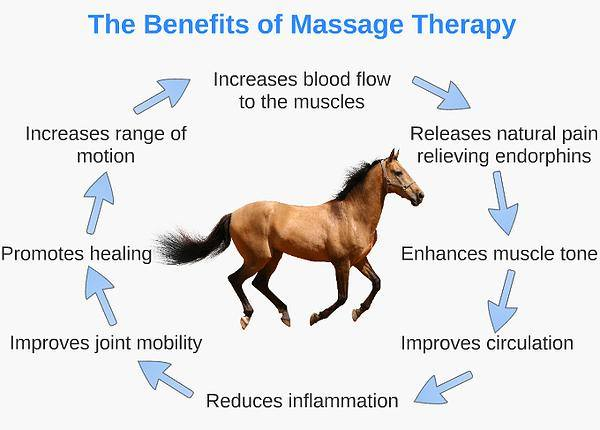
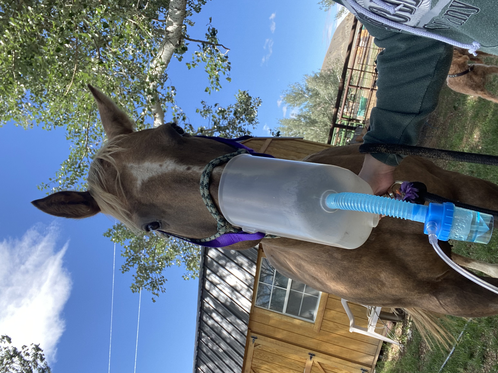
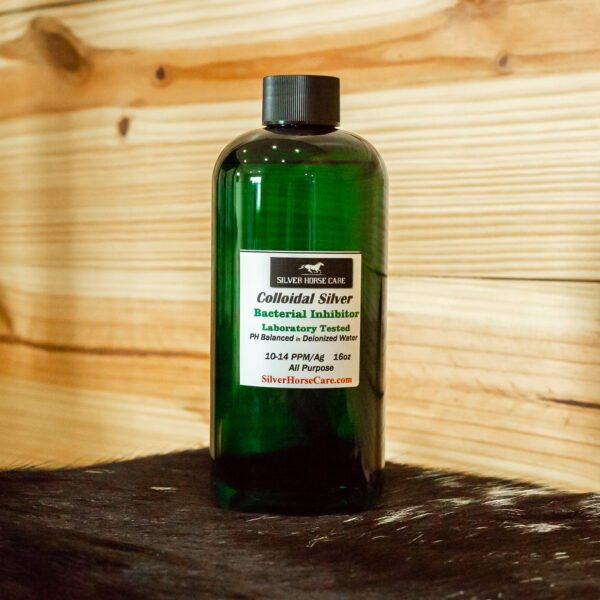

Equine Massage
Equine Massage Therapy uses a variety of massage techniques and strokes to stimulate blood flow to different
areas of the body. This encourages blood flow and brings in oxygen and other nutrients, at the same time removing
lactic acid build up and eliminating other metabolic waste from the body. The removal of lactic acid build up eliminates soreness.

Breathing Treatments
A breathing treatment includes pure colloidal silver and a jet nebulizer designed to provide effective and
fast delivery to where your horse needs it the most – their lungs. Unlike systematic medications, which take time to pass
through the gastrointestinal tract and into the bloodstream, nebulizers deliver medications directly and
quickly to the respiratory tract. Nebulization is used to clear the airways and the lungs so the horse can breathe
easier thus feel better.
Colloidal Silver is all natural and PH balanced. Silver is anti-bacterial, anti-viral, anti-microbial and anti-fungal. This is the
liquid that goes in the cup for the horses to breath in.

